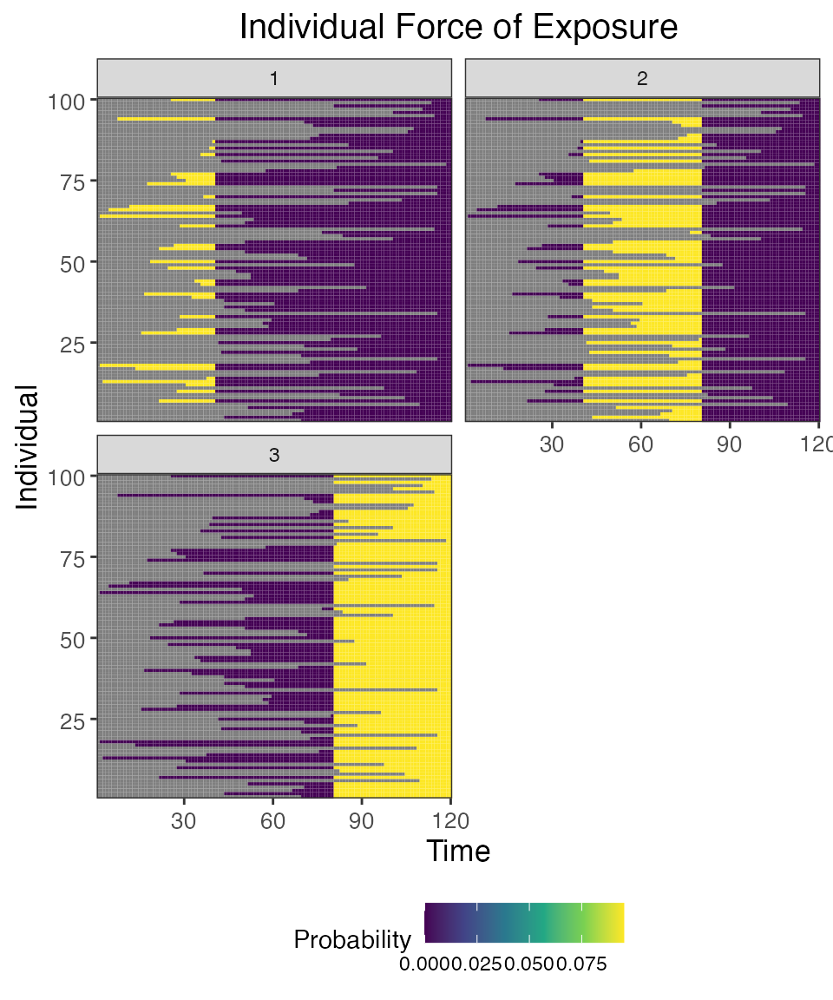

Case study 3: One pathogen system with cross-reactive strains (Influenza)
Source:vignettes/case_study_3_influenza.Rmd
case_study_3_influenza.RmdHere, we will use the serosim package to generate a cross-sectional serosurvey of a one pathogen system with cross-reactive strains, modeled after influenza. This simulation will track natural infection to multiple strains for 100 individuals across a 10 year period. At the end of the 10 year period, we will conduct a cross-sectional serological survey where we will use an discrete haemagglutination assay to measure an individual’s biomarker level against all strains.
We will set up each of the required arguments and models for runserosim in the order outlined in the methods section of the paper. In this example, biomarker quantity, titer level and antibody level all mean the same thing.
We will use well characterized epidemiological and immunological characteristics of influenza when selecting our models wherever possible and make reasonable assumptions for other required models wherever information is lacking. For this example, we will use arbitrarily selected antibody kinetics parameters. Users can perform a literature review to select the best parameters for their strains of interest.
Within each section below, we will briefly explain the rationale behind our selected model inputs. We caution users to conduct their own research into the models and associated parameters which best align with their disease system and biomarker test kits.
Load necessary packages:
## Install and load serosim
## devtools::install_github("AMenezes97/serosim")
library(serosim)
## Load additional packages required
library(tidyverse)
library(data.table)
library(ggplot2)
library(patchwork)
library(reshape2)1.1 Simulation Settings
We will simulate monthly time steps across a 10 year period. Therefore, we will have 120 time steps. Note that these are arbitrary time steps which will need to be scaled to the right time resolution to match any time-based parameters used later on.
1.2 Population Demography
For this case study, we are not interested in tracking any demography information but we are interested in tracking individual’s birth time. We will use the generate_pop_demography function to create the demography tibble needed for runserosim . See case study 2 for more information on how to add additional variables to the demography tibble.
Note: The runserosim function, called later on, only requires a demography tibble with two columns (individuals and times).
## Specify the number of individuals in the simulation
N<-100
## Generate the population demography tibble
## See help file(?generate_pop_demography) for more information on function arguments.
## age_min is set to 0 which allows births to occur until the last time step
## Let's assume that no individuals are removed from the population and set prob_removal to 0
demography <- generate_pop_demography(N, times, age_min=0, prob_removal=0)## Joining with `by = join_by(i)`
## Examine the generated demography tibble
summary(demography)## i birth removal times
## Min. : 1.00 Min. : 2.00 Min. :121 Min. : 1.00
## 1st Qu.: 25.75 1st Qu.: 33.75 1st Qu.:121 1st Qu.: 30.75
## Median : 50.50 Median : 58.50 Median :121 Median : 60.50
## Mean : 50.50 Mean : 61.15 Mean :121 Mean : 60.50
## 3rd Qu.: 75.25 3rd Qu.: 86.00 3rd Qu.:121 3rd Qu.: 90.25
## Max. :100.00 Max. :119.00 Max. :121 Max. :120.001.3 Exposure to biomarker mapping
Now we set up the exposure IDs and biomarker IDs for the simulation which will determine which infections are occurring and which biomarkers are being boosted and tracked. Here, we will simulate three circulating strains of influenza strain_a, strain_b and strain_c. Each strain will boost biomarkers to all three strains. These boost parameters will be specified in section 1.6.
runserosim requires that exposure_id and biomarker_id are numeric so we will use the reformat_biomarker_map function to create a new version of the biomarker map. Users can go directly to numeric biomarker_map if they wish.
Note that the reformat_biomarker_map function will number the exposures and biomarkers in alphabetical order so that the first exposure event or biomarker that is listed will not necessarily be labeled as 1.
## Create biomarker map
biomarker_map_original <- tibble(exposure_id=c("strain_a","strain_a","strain_a","strain_b","strain_b","strain_b", "strain_c","strain_c","strain_c"),biomarker_id=rep(c("biomarker_a","biomarker_b","biomarker_c"),3))
biomarker_map_original## # A tibble: 9 × 2
## exposure_id biomarker_id
## <chr> <chr>
## 1 strain_a biomarker_a
## 2 strain_a biomarker_b
## 3 strain_a biomarker_c
## 4 strain_b biomarker_a
## 5 strain_b biomarker_b
## 6 strain_b biomarker_c
## 7 strain_c biomarker_a
## 8 strain_c biomarker_b
## 9 strain_c biomarker_c
## Reformat biomarker_map for runserosim
biomarker_map <-reformat_biomarker_map(biomarker_map_original)
biomarker_map## # A tibble: 9 × 2
## exposure_id biomarker_id
## <dbl> <dbl>
## 1 1 1
## 2 1 2
## 3 1 3
## 4 2 1
## 5 2 2
## 6 2 3
## 7 3 1
## 8 3 2
## 9 3 31.4 Force of Exposure and Exposure Model
Now, we need to specify the foe_pars argument which contains the force of exposure for all exposure_IDs across all time steps. We also specify the exposure model which will be called within runserosim later. The exposure model will determine the probability that an individual is exposed to a specific exposure event.
Since we did not specify different groups within demography, all individuals will automatically be assigned group 1. Therefore, we only need 1 row for dimension 1 in foe_pars. Groups can be used as an indicator of location if the user wishes to specify a location specific force of exposure (See case study 2). Dimension 3 of the foe_array must be in the same order as the exposure_id within the biomarker map. For example, the force of exposure for exposure_id 1 will be inputted within the foe_pars[,,1].
Here, we specified the same force of exposure for circulating strains within foe_pars for simplicity but users will likely have varying numbers to match real world settings. Each strain is only circulating for 40 time steps with no co-circulation.
## Create an empty array to store the force of exposure for all exposure types
foe_pars <- array(0, dim=c(1,max(times),n_distinct(biomarker_map$exposure_id)))
## Specify the force of exposure for exposure ID 1 which represents strain A circulation
foe_pars[,1:40,1] <- 0.1
foe_pars[,41:80,1] <- 0
foe_pars[,81:120,1] <- 0
## Specify the force of exposure for exposure ID 2 which represents strain B circulation
foe_pars[,1:40,2] <- 0
foe_pars[,41:80,2] <- 0.1
foe_pars[,81:120,2] <- 0
## Specify the force of exposure for exposure ID 3 which represents strain C circulation
foe_pars[,1:40,3] <- 0
foe_pars[,41:80,3] <- 0
foe_pars[,81:120,3] <- 0.1
## Specify a simple exposure model which calculates the probability of exposure directly from the force of exposure at that time step. In this selected model, the probability of exposure is 1-exp(-FOE) where FOE is the force of exposure at that time.
exposure_model<-exposure_model_simple_FOE
## Examine the probability of exposure to each strain over time for the specified exposure model and foe_pars array
plot_exposure_model(exposure_model=exposure_model_simple_FOE, times=times, n_groups = 1, n_exposures = 3, foe_pars=foe_pars)
1.5 Immunity Model
Here, we specify the immunity model which will determine the probability that an exposure event is successful in inducing an immunological response. Since we have multiple cross-reactive influenza strains we will use immunity_model_ifxn_biomarker_prot. With this immunity model, the probability of a successful infection depends on the biomarker quantity to all three strains, in this case influenza antibody titer, at the time of exposure.
Additional successful exposure events aka “reinfection” events are representative of boosting events. The user can limit the frequency of reinfections by adjusting the biomarker-mediated protection (also known as titer-mediated protection) parameters or by specifying a maximum number of allowed successful exposure events. The titer-mediated protection parameters used within this model are defined within model_pars which will be loaded in section 1.6.
Here, we placed no limit on the maximum number of infections to either of the three influenza strains however our selected immunity model will take into account an individual’s current biomarker level when determining the probability of a successful infection.
Our chosen immunity model has an optional argument (cross_reactivity_table) which allows users to specify specify whether other biomarker quantities are also protective against successful exposure. For this example, biomarkers against the infecting strain (e.g., exposure_id=strain_a and biomarker_id=biomarker_a) have 100% cross-reactivity while other biomarkers have varying levels of cross-reactivity.
Again, the following cross-reactivity and biomarker-mediated protection parameters were selected arbitrarily.
## Specify immunity model within the runserosim function below
immunity_model<-immunity_model_ifxn_biomarker_prot
## The immunity model we selected will take into account an individual's current biomarker quantity to all three strains and the cross-reactivity between different biomarkers when determining the probability of successful infection.
## Specify the maximum number of successful exposure events an individual can receive for each exposure type
## We placed no successful exposure limit on the number influenza infection exposures
max_events<-c(Inf,Inf,Inf)
## Specify the cross-reactivity table argument which will be used by the immunity model.
cr_table <-tibble(
exposure_id=c("strain_a","strain_a","strain_a","strain_b","strain_b","strain_b", "strain_c","strain_c","strain_c"),
biomarker_id=rep(c("biomarker_a","biomarker_b","biomarker_c"),3),
cross_reactivity=c(1,0.5,0.25,0.5,1,0.5,0.25,.5,1))
## The cross_reactivity table also requires that exposure_id and biomarker_id are numeric. The reformat_biomarker_map function will convert both columns to numbers.
cr_table<-reformat_biomarker_map(cr_table)
## Plot biomarker-mediated protection curve given parameters specified within model_pars for biomarker 1, influenza strain A antibody (DP_antibody) which will be loaded in section 1.6. Biomarker mediated protection parameters are the same for all 3 influenza strains so the following plot will look the same for all exposure/biomarker types.
plot_biomarker_mediated_protection(0:120, biomarker_prot_midpoint=40, biomarker_prot_width=.09) 1.6 Antibody Model and Model Parameters
Now, we specify the antibody model to be used within runserosim to track antibody kinetics, or more broadly biomarker kinetics for each biomarker produced from successful exposure events. We will be using a monophasic boosting-waning model in this example. This model assumes that for each exposure there is a boost and boost waning parameter.
The antibody kinetics parameters are pre-loaded within a csv file. Users can edit the csv file to specify their own parameters. All parameters needed for the user specified antibody model must be specified within the model_pars.
Lastly, we define the draw_parameters function which determines how each individual’s antibody kinetics parameters are simulated from the within-host processes parameters tibble (model_pars). We will use a function which draws parameters directly from model_pars for the antibody model with random effects to represent individual heterogeneity in immunological responses. Parameters are drawn randomly from a distribution with mean and standard deviation specified within model_pars.
runserosim requires that exposure_id and biomarker_id within model_pars are numeric and match the exposure to biomarker map so we will use the reformat_biomarker_map function again to create a new version of model_pars. Users can go directly to numeric model_pars if they wish.
## Specify the antibody model
antibody_model<-antibody_model_monophasic
## Bring in the antibody parameters needed for the antibody model
## Note that the observation error parameter needed for the observation model (Section 1.7) is defined here too.
model_pars_path <- system.file("extdata", "model_pars_cs3.csv", package = "serosim")
model_pars_original <- read.csv(file = model_pars_path, header = TRUE)
model_pars_original## exposure_id biomarker_id name mean sd distribution
## 1 strain_a biomarker_a boost 80.00 3e+01 log-normal
## 2 strain_a biomarker_a wane 0.02 5e-03 log-normal
## 3 strain_a biomarker_b boost 40.00 1e+01 log-normal
## 4 strain_a biomarker_b wane 0.02 5e-03 log-normal
## 5 strain_a biomarker_c boost 20.00 1e+01 log-normal
## 6 strain_a biomarker_c wane 0.02 5e-03 log-normal
## 7 strain_a biomarker_a biomarker_prot_midpoint 40.00 NA
## 8 strain_a biomarker_a biomarker_prot_width 0.09 NA
## 9 <NA> biomarker_a obs_sd NA 1e+01 normal
## 10 strain_b biomarker_a boost 40.00 1e+01 log-normal
## 11 strain_b biomarker_a wane 0.02 5e-03 log-normal
## 12 strain_b biomarker_b boost 80.00 3e+01 log-normal
## 13 strain_b biomarker_b wane 0.02 5e-03 log-normal
## 14 strain_b biomarker_c boost 40.00 1e+01 log-normal
## 15 strain_b biomarker_c wane 0.02 5e-03 log-normal
## 16 strain_b biomarker_b biomarker_prot_midpoint 40.00 NA
## 17 strain_b biomarker_b biomarker_prot_width 0.09 NA
## 18 <NA> biomarker_b obs_sd NA 1e+01 normal
## 19 strain_c biomarker_a boost 20.00 1e+01 log-normal
## 20 strain_c biomarker_a wane 0.02 5e-03 log-normal
## 21 strain_c biomarker_b boost 40.00 1e+01 log-normal
## 22 strain_c biomarker_b wane 0.02 5e-03 log-normal
## 23 strain_c biomarker_c boost 80.00 3e+01 log-normal
## 24 strain_c biomarker_c wane 0.02 5e-03 log-normal
## 25 strain_c biomarker_c biomarker_prot_midpoint 40.00 NA
## 26 strain_c biomarker_c biomarker_prot_width 0.09 NA
## 27 <NA> biomarker_c obs_sd NA 1e+01 normal
# model_pars_original <- read.csv("~/Documents/GitHub/serosim/inst/extdata/model_pars_cs3.csv")
# model_pars_original
## Reformat model_pars for runserosim
model_pars<-reformat_biomarker_map(model_pars_original)
model_pars## exposure_id biomarker_id name mean sd distribution
## 1 1 1 boost 80.00 3e+01 log-normal
## 2 1 1 wane 0.02 5e-03 log-normal
## 3 1 2 boost 40.00 1e+01 log-normal
## 4 1 2 wane 0.02 5e-03 log-normal
## 5 1 3 boost 20.00 1e+01 log-normal
## 6 1 3 wane 0.02 5e-03 log-normal
## 7 1 1 biomarker_prot_midpoint 40.00 NA
## 8 1 1 biomarker_prot_width 0.09 NA
## 9 NA 1 obs_sd NA 1e+01 normal
## 10 2 1 boost 40.00 1e+01 log-normal
## 11 2 1 wane 0.02 5e-03 log-normal
## 12 2 2 boost 80.00 3e+01 log-normal
## 13 2 2 wane 0.02 5e-03 log-normal
## 14 2 3 boost 40.00 1e+01 log-normal
## 15 2 3 wane 0.02 5e-03 log-normal
## 16 2 2 biomarker_prot_midpoint 40.00 NA
## 17 2 2 biomarker_prot_width 0.09 NA
## 18 NA 2 obs_sd NA 1e+01 normal
## 19 3 1 boost 20.00 1e+01 log-normal
## 20 3 1 wane 0.02 5e-03 log-normal
## 21 3 2 boost 40.00 1e+01 log-normal
## 22 3 2 wane 0.02 5e-03 log-normal
## 23 3 3 boost 80.00 3e+01 log-normal
## 24 3 3 wane 0.02 5e-03 log-normal
## 25 3 3 biomarker_prot_midpoint 40.00 NA
## 26 3 3 biomarker_prot_width 0.09 NA
## 27 NA 3 obs_sd NA 1e+01 normal
## Specify the draw_parameters function
draw_parameters<-draw_parameters_random_fx
## Plot example biomarker trajectories given the specified antibody kinetics model, model parameters and draw parameters function
plot_antibody_model(antibody_model_monophasic, N=100, model_pars=model_pars,draw_parameters_fn = draw_parameters_random_fx, biomarker_map=biomarker_map)1.7 Observation Model and observation_times
Now we specify how observed influenza biomarker quantities are generated as a probabilistic function of the true, latent biomarker quantity and when to observe these quantities. In this step, we specify the sampling design and assay choice for our serological survey. We will take samples of all individuals at the end of the simulation (t=120).
Our chosen observation model observes the latent influenza biomarker quantity for all three biomarkers given a discrete assay with added noise. The added noise represents assay variability and is implemented by sampling from a distribution with the true latent biomarker quantity as the mean and the measurement error as the standard deviation. The observation standard deviation and distribution are defined within model_pars as the “obs_sd” parameter. Within this observation model, we can also specify the assay sensitivity and specificity.
## Specify the observation model
observation_model<-observation_model_discrete
## Specify the cutoffs for the discrete assay. This will depend on the dilutions of the haemagglutination assay.
## This is a matrix with each row containing all of the cutoffs for that biomarker. Here, we have set the same cutoffs for all three biomarkers
breaks <- seq(0,120,by=10)
cutoffs <- matrix(breaks,nrow=3,ncol=length(breaks), byrow=TRUE)
## Specify assay sensitivity and specificity needed for the observation model
sensitivity<-0.85
specificity<-0.9
## Specify observation_times (serological survey sampling design) to observe all three biomarkers across all individuals at the end of the simulation (t=120)
obs1 <- tibble(i=1:N,t=120, b=1)
obs2 <- tibble(i=1:N,t=120, b=2)
obs3 <- tibble(i=1:N,t=120, b=3)
observation_times<-rbind(obs1,obs2,obs3)1.9 Run Simulation
This is the core simulation where all simulation settings, models and parameters are specified within the main simulation function. Run time for this step varies depending on the number of individuals and the complexities of the specified models. There is a built in pre-computation step within runserosim where the simulation attempts to perform as much pre-computation as possible for the exposure model to speed up the main simulation code. Users can turn off this pre-computation by setting pre-computation to FALSE within runserosim.
## Run the core simulation and save outputs in "res"
res<- runserosim(
simulation_settings,
demography,
observation_times,
foe_pars,
biomarker_map,
model_pars,
exposure_model,
immunity_model,
antibody_model,
observation_model,
draw_parameters,
## Other arguments needed
max_events=max_events,
cutoffs=cutoffs,
cross_reactivity_table=cr_table,
sensitivity=sensitivity,
specificity=specificity
)
## Note that models and arguments specified earlier in the code can be specified directly within this function.1.10 Generate Plots
Now that the simulation is complete, let’s plot and examine the simulation outputs.
## Plot influenza strain A specific biomarker kinetics and exposure histories for 10 individuals
plot_subset_individuals_history(res$biomarker_states %>% filter(b==1), res$exposure_histories_long, subset=10, demography, removal=TRUE)## Warning: Removed 109 rows containing missing values (`geom_line()`).
## Plot influenza strain B specific biomarker kinetics and exposure histories for 10 individuals
plot_subset_individuals_history(res$biomarker_states %>% filter(b==2), res$exposure_histories_long, subset=10, demography, removal=TRUE)## Warning: Removed 82 rows containing missing values (`geom_line()`).
## Plot influenza strain C specific biomarker kinetics and exposure histories for 10 individuals
plot_subset_individuals_history(res$biomarker_states %>% filter(b==3), res$exposure_histories_long, subset=10, demography, removal=TRUE)## Warning: Removed 66 rows containing missing values (`geom_line()`).
## Plot individual probability of exposure for all exposure types.
## This is the output of the exposure model. Note that this reflects our inputs that the influenza strains were never co-circulating.
plot_exposure_force(res$exposure_force_long)
## Plot individual successful exposure probabilities for all exposure types
## This is the output of the exposure model multiplied by the output of the immunity model.
## In other words, this is the probability of exposure event being successful and inducing an immunological response
plot_exposure_prob(res$exposure_probabilities_long)
## Plot individual exposure histories for all exposure types
plot_exposure_histories(res$exposure_histories_long)
## Plot influenza strain A antibody (biomarker 1) states for all individuals (true biomarker quantities)
plot_biomarker_quantity(res$biomarker_states %>% filter(b==1))
## Plot influenza strain B antibody (biomarker 2) states for all individuals (true biomarker quantities)
plot_biomarker_quantity(res$biomarker_states %>% filter(b==2))
## Plot influenza strain C antibody (biomarker 3) states for all individuals (true biomarker quantities)
plot_biomarker_quantity(res$biomarker_states %>% filter(b==3))
## Plot the influenza strain A serosurvey results (observed biomarker quantities)
plot_obs_biomarkers_one_sample(res$observed_biomarker_states %>% filter(b==1))
## Plot the influenza strain B serosurvey results (observed biomarker quantities)
plot_obs_biomarkers_one_sample(res$observed_biomarker_states %>% filter(b==2))
## Plot the influenza strain C serosurvey results (observed biomarker quantities)
plot_obs_biomarkers_one_sample(res$observed_biomarker_states %>% filter(b==3))
## Note that the simulated kinetics parameters are also stored
head(res$kinetics_parameters)## # A tibble: 6 × 7
## i t x b name value realized_value
## <int> <dbl> <dbl> <dbl> <chr> <dbl> <dbl>
## 1 1 76 2 1 boost 58.1 58.1
## 2 1 76 2 1 wane 0.0239 0.0239
## 3 1 76 2 2 boost 91.7 91.7
## 4 1 76 2 2 wane 0.0222 0.0222
## 5 1 76 2 3 boost 43.8 43.8
## 6 1 76 2 3 wane 0.0205 0.0205